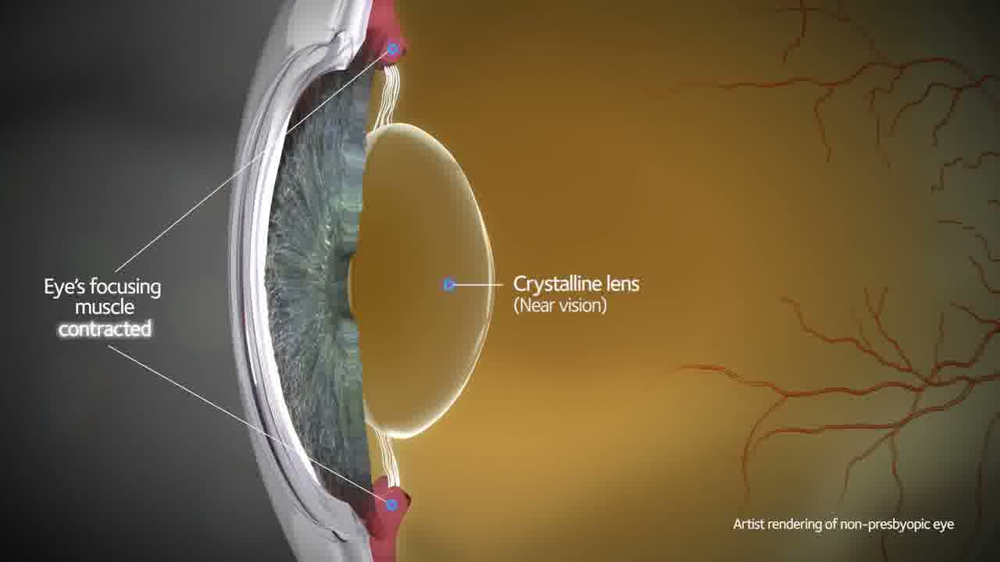
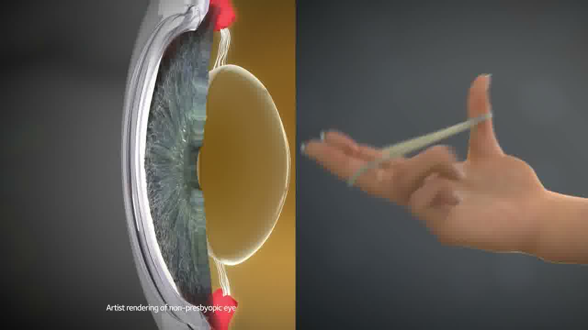
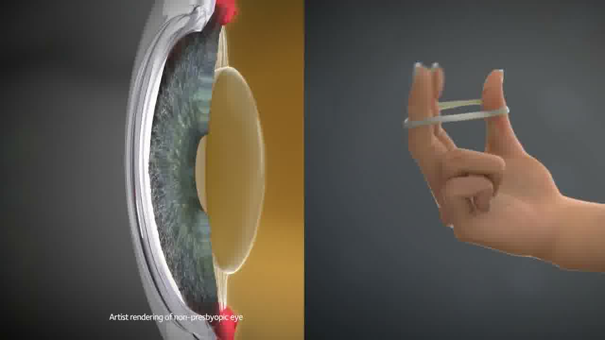
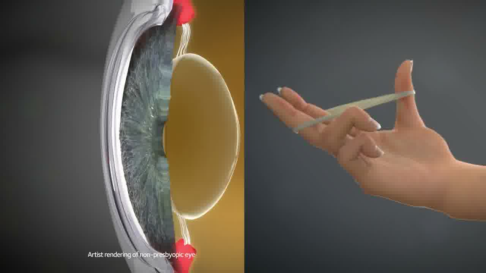

👁 ทดลองอ่านด้วยตาตัวเอง — ขนาดไหนสบายตาที่สุด?
ลองจินตนาการว่าตาของคุณเป็นเหมือน กล้ามเนื้อ — ถ้าต้องเกร็งทำงานหนักทุกวัน ไม่ช้าก็เร็วมันก็ต้องล้า นั่นแหละคือสิ่งที่เกิดขึ้นกับดวงตาเวลาจ้องโทรศัพท์หน้าจอเล็กๆ เป็นชั่วโมงๆ
สรุปสั้นๆ ก่อนเลย: การปรับฟอนต์ให้ใหญ่ขึ้น ไม่ได้แก้สายตายาว แต่ช่วย ลดการทำงานหนักของตา — ซึ่งช่วยชะลออาการ และลด Pseudo Myopia ในคนอายุน้อยได้จริง
ก่อนอื่น — ตาเพ่งทำงานยังไง?
แค่ปรับฟอนต์ให้ใหญ่ขึ้น กล้ามเนื้อตาก็ทำงานน้อยลงทันที — ปวดหัวน้อยลง ตาไม่ล้า ง่ายกว่าที่คิดมากเวลามองใกล้
เลนส์แก้วตา🔍 Crystalline Lens
เลนส์ยืดหยุ่นในลูกตา ทำหน้าที่โฟกัสภาพ เหมือนเลนส์กล้องที่ปรับโฟกัสอัตโนมัติ
ต้องโป่งออกเพื่อเพิ่มกำลังรวมแสง กระบวนการนี้เรียกว่า
Accommodation🔍 Accommodation
กล้ามเนื้อ Ciliary บีบให้เลนส์โป่ง เพื่อโฟกัสภาพใกล้
— กล้ามเนื้อ Ciliary ต้องเกร็งค้างไว้ตลอดเวลา
ยิ่งตัวอักษรเล็ก กล้ามเนื้อยิ่งทำงานหนักขึ้น พอทำนานๆ ก็เกิดอาการล้าตา ปวดหัว ตาพร่า — ที่เรียกรวมว่า
Digital Eye Strain🔍 Digital Eye Strain
ตาล้า ปวดหัว ตาพร่า ตาแห้ง จากการจ้องหน้าจอนาน

⚡ ยิ่งใกล้ กล้ามเนื้อตายิ่งทำงานหนัก (หน่วย Diopters)
ใกล้มาก ⚠️
ระยะที่หลายคนถือ
ระยะอ่านหนังสือ ✅
กล้ามเนื้อพัก 😌
แค่ขยับโทรศัพท์ออกไป 10 ซม. กล้ามเนื้อตาทำงานน้อยลงชัดเจน

กล้ามเนื้อตาต้องทำงานหนัก

กล้ามเนื้อไม่ต้องทำงานหนัก

Dr. James Sheedy พิสูจน์อะไรไว้?
งานวิจัยเมื่อ 20 ปีที่แล้วยังใช้ได้อยู่ เพราะตามนุษย์ไม่เคยอัปเดต versionDr. James Sheedy นักวิจัยจาก Pacific University ผู้บุกเบิกการศึกษา Computer Vision Syndrome ตั้งแต่ยุค 2000 พิสูจน์ว่า ขนาดตัวอักษรที่เล็กเกินไปเป็นตัวการสำคัญทำให้ตาล้า
เมื่อลดขนาดตัวอักษรลง กล้ามเนื้อตาต้องออกแรงเพ่งมากขึ้นอย่างมีนัยสำคัญ และยิ่งใช้เวลานาน ความล้าสะสมก็ทวีคูณขึ้นเรื่อยๆ — แม้อยู่ที่ระยะเดิม
(Sheedy et al., Optometry and Vision Science, 2003–2005)
งานวิจัยของ Sheedy ไม่ได้ขึ้นอยู่กับเทคโนโลยีหน้าจอ แต่ขึ้นอยู่กับ กายวิภาคของดวงตา — ซึ่งไม่มีการอัปเดต version ยิ่งกว่านั้น โทรศัพท์สมัยนี้ยังแย่กว่าจอคอมอีก เพราะระยะดูใกล้กว่า แสงไม่คงที่ และเราดูนานขึ้นมากในชีวิตประจำวัน
ยืนยันว่า Digital Eye Strain จากสมาร์ทโฟนมีกลไกเดียวกัน แต่รุนแรงกว่า เพราะระยะดูใกล้กว่า — เฉลี่ย 33 cm เทียบกับ 50–60 cm สำหรับจอคอม
(Rosenfield, Work, 2016)
Pseudo Myopia คืออะไร?
สายตาสั้นชั่วคราวที่หายเองได้ — แต่ถ้าปล่อยไว้บ่อยๆ โดยเฉพาะในเด็ก อาจกลายเป็นถาวรได้Pseudo Myopia🔍 Pseudo Myopia
สายตาสั้นชั่วคราว กล้ามเนื้อตาเพ่งค้างจนคลายไม่ทัน มองไกลพร่า แต่หายได้ หรือ "สายตาสั้นชั่วคราว" เกิดจากกล้ามเนื้อตาตึงค้างนานจนคลายตัวไม่ทัน ผลคือ หลังจ้องโทรศัพท์นานๆ มองออกไปไกลๆ จะพร่ามัวชั่วคราว
"Pseudo Myopia ไม่เป็นไร เดี๋ยวก็หาย" — จริงอยู่ที่มันหายเอง แต่ถ้าเกิดซ้ำๆ บ่อยๆ ในวัยเด็กและวัยรุ่น งานวิจัยหลายชิ้นชี้ว่ามันอาจกระตุ้นให้ลูกตายืดยาวขึ้น กลายเป็นสายตาสั้นถาวรในที่สุด
เมื่อตัวอักษรใหญ่ขึ้น ตาไม่ต้องเพ่งหนัก กล้ามเนื้อ Ciliary ผ่อนคลายมากขึ้น — โอกาสเกิด Pseudo Myopia สะสมก็ลดลง โดยเฉพาะในเด็กและวัยรุ่น
Presbyopia — สายตายาวตามอายุ
เลนส์ตาแข็งตัวตามอายุ ทุกคนเจอ — แต่ยิ่งดูแลตาดี อาการก็จะรุนแรงช้าลงถ้า Pseudo Myopia เปรียบเหมือนกล้ามเนื้อเป็นตะคริว
Presbyopia🔍 Presbyopia
เลนส์แก้วตาแข็งตัว โฟกัสใกล้ลำบาก เริ่มชัดหลัง 40 ปี
เปรียบเหมือนทั้งกล้ามเนื้อและอุปกรณ์เสื่อมสภาพตามอายุจริงๆ
หลังอายุ 40 เลนส์แก้วตาเริ่มแข็งตัวทีละน้อย ความสามารถในการโฟกัสภาพใกล้ (
Amplitude of Accommodation🔍 Amplitude of Accommodation
ช่วงระยะที่ตาโฟกัสได้ ลดลงทุกปีตามอายุ)
ลดลงเรื่อยๆ
อายุ 40 ปี — Amplitude เหลือประมาณ 4–5 Diopters
อายุ 48 ปี — เหลือประมาณ 2 Diopters
อายุ 60 ปี — เหลือน้อยกว่า 1 Diopter
(Donders FC, 1864 — ยังคงใช้อ้างอิงในคลินิกทั่วโลก)
แล้วฟอนต์ใหญ่ช่วยยังไง?
เมื่อตัวอักษรใหญ่ขึ้น ตาสามารถอ่านได้ที่ระยะไกลขึ้นนิดนึง — ทำให้กล้ามเนื้อต้องเพ่งน้อยลง สำหรับคนที่ Amplitude of Accommodation เหลือน้อย นี่คือความแตกต่างระหว่าง "อ่านได้สบาย" กับ "ปวดหัวทุกครั้งที่ดูโทรศัพท์"
แล้วควรทำอะไรบ้าง?
6 วิธีที่ทำได้วันนี้เลย ไม่ต้องรอให้ตาพังตั้งขนาดตัวอักษรที่ "ใหญ่" หรือ "ใหญ่มาก" ในการตั้งค่าระบบ ลดภาระกล้ามเนื้อตาได้ทันที
ระยะ 40–50 cm ดีกว่า 20–25 cm มาก ทุก 10 ซม. ที่ไกลขึ้น กล้ามเนื้อตาทำงานน้อยลงเห็นๆ
ทุก 20 นาที มองไกล 6 เมตร นาน 20 วินาที ให้กล้ามเนื้อตาคลายตัว
ลดความแตกต่างของความสว่างระหว่างหน้าจอและสภาพแวดล้อม
โดยเฉพาะหลัง 40 ปี ค่าสายตาเปลี่ยนทุกปี Progressive lens อาจเป็นทางออกที่ดีที่สุด
อย่าดูโทรศัพท์ในที่มืด แสงหน้าจอต้องสมดุลกับแสงในห้อง
🙋 คำถามที่พบบ่อย
ลูกค้าถามบ่อยที่สุด — ตอบตรงๆ ไม่อ้อมค้อมไม่ได้ "ป้องกัน" แต่ "ชะลอ" และ "ลดอาการ" ได้ครับ Presbyopia เป็นกระบวนการธรรมชาติจากการแข็งตัวของเลนส์แก้วตา — ไม่มีอะไรหยุดได้ แต่การลดภาระการเพ่งทุกวันช่วยให้กล้ามเนื้อตาไม่ล้าเกินไป และชะลอการที่อาการจะรุนแรงขึ้นได้
กังวลได้ครับ — Pseudo Myopia ในเด็กน่าเป็นห่วงกว่า Presbyopia ในผู้ใหญ่เสียอีก เด็กลูกตายังเจริญเติบโต การกระตุ้นซ้ำๆ จากการเพ่งหน้าจออาจทำให้ลูกตายืดยาวขึ้น แนะนำให้ตรวจสายตาปีละครั้งและสมดุลกับกิจกรรมกลางแจ้ง
งานวิจัยล่าสุดยังไม่มีหลักฐานชัดเจนว่า Blue Light จากหน้าจอทำลายจอประสาทตา แต่มีผลต่อ Melatonin รบกวนการนอนหลับได้ ถ้าใช้โทรศัพท์ก่อนนอน แว่น Blue Light Filter อาจช่วยเรื่องการนอนได้ แต่สำหรับตาล้า — ต้นเหตุหลักคือการเพ่ง ไม่ใช่แสงสีฟ้า
ถือว่าปกติมากครับ — Presbyopia เริ่มตั้งแต่อายุกลาง 30 ปีกว่าๆ แล้ว ปรับฟอนต์โทรศัพท์ใหญ่ขึ้น, ถือโทรศัพท์ให้ห่างขึ้น, แสงสว่างให้เพียงพอ ถ้าอาการรบกวนชีวิตประจำวัน ควรมาตรวจสายตาเพื่อพิจารณา Progressive Lens ที่เหมาะสม
Progressive Lens คือเลนส์ที่รวมค่าสายตาทั้งมองไกล กลาง และใกล้ในเลนส์อันเดียว — ไม่มีเส้นแบ่งให้เห็น เหมาะมากสำหรับผู้ที่เริ่มมี Presbyopia เพราะไม่ต้องถอดใส่แว่นหลายอัน ที่ Optical X มีเลนส์ทดลองกว่า 60 คู่ให้ลองก่อนตัดสินใจครับ
เชื่อถือได้ครับ — เพราะ Sheedy ศึกษา กายวิภาคของดวงตา ไม่ใช่ศึกษาเทคโนโลยี กล้ามเนื้อ Ciliary ทำงานแบบเดิมมาตลอดวิวัฒนาการของมนุษย์ ต่อมา Rosenfield (2016) ยืนยันและต่อยอดกับสมาร์ทโฟนโดยเฉพาะ — หน้าจอจะเปลี่ยนไปยังไง แต่ตามนุษย์ยังเหมือนเดิม
📚 อ้างอิงงานวิจัย
- Sheedy JE, et al. "Task variables and visual discomfort associated with computer use." Optometry and Vision Science, 2003.
- Rosenfield M. "Computer vision syndrome (a.k.a. digital eye strain)." Optometry in Practice, 2016.
- Donders FC. On the Anomalies of Accommodation and Refraction of the Eye. London, 1864.
- Wolffsohn JS, et al. "Global trends in myopia management." Contact Lens and Anterior Eye, 2016.
- American Optometric Association. "Computer Vision Syndrome." AOA Clinical Practice Guidelines, 2023.